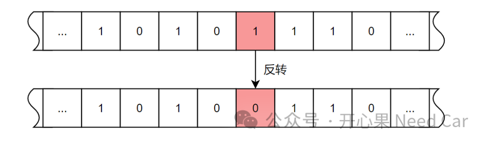
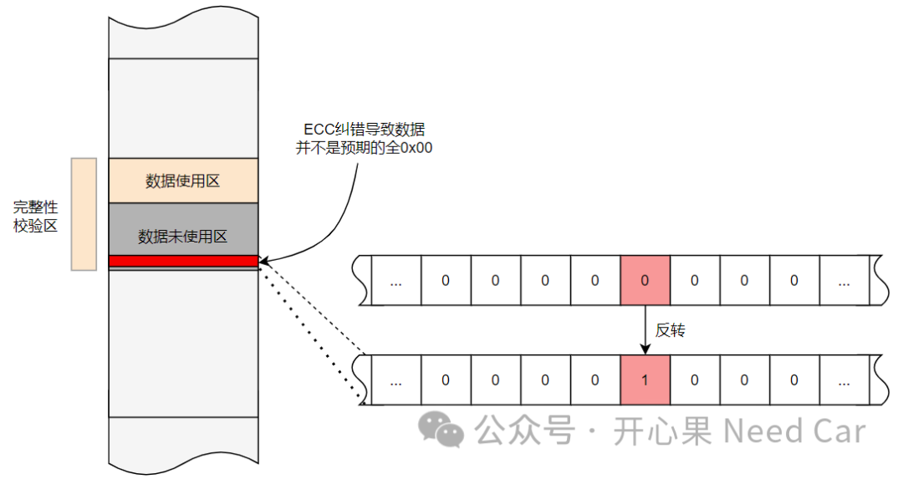
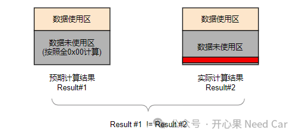
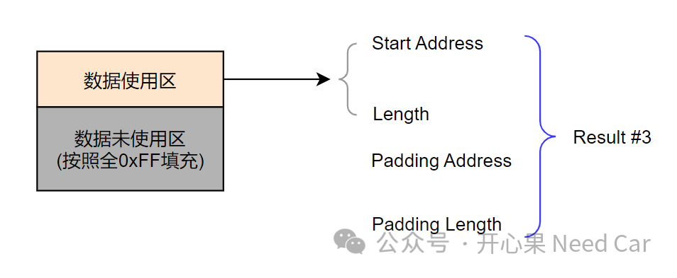

开心果 Need Car · 2024-02-15T13:24:00+08:00 · 微信原文
1、为什么会产生ECC？
我们知道，常量或者一些代码，常常需要存储在固定内存区。eg：代码存放在PFlash，关键参数存储在DFlash。不管PFlash还是DFlash，都有一个特性：控制器断电后，数据不丢失。
数据存储到PFlash或者DFlash，真的会一直不丢失，或者说不变吗？答：否。哪些工况会导致存储在PFlash或者DFlash数据变化呢？eg：极端雷雨天气或者强磁场变化的工况下，可能会导致存储在PFlash或者DFlash数据的一些bit位反转，示意如下：

当固定存储区的bit反转以后，将会产生不可预知的风险。eg：发生反转的bit对应关键控制参数，这些关键控制参数发生bit反转，可能导致车辆功能降级或者无法使用。因此，为了提高程序的鲁棒性，需要确保存储数据的可靠性，所以，ECC检错机制应运而生。
目前，多数的车载芯片，不仅可以检测单个bit错误，甚至可以检测2 bit、3 bit错误。同时，也能对1bit错误或者2bit错误进行纠正，进而确保存储数据的可靠性。
2、ECC对数据完整性的影响
工程中，大家是否留意过这样的问题：对某块PFlash或者DFlash存储区进行了擦除动作，然而有些位置似乎擦除的不彻底，并不是预期的全0x00，也不影响使用，这是为什么呢？答：ECC自动纠错功能。
说到这，你是否已经有了答案？不管使用CRC校验还是哈希校验，目的都是一样的：保证数据的完整性。所以，如果ECC的自动纠错导致某些bit反转，虽然bit位纠正了，但是，对于数据完整性的计算就会产生影响。
如下图，设定某个内存区间进行完整性校验，但是，此空间只使用了部分区域，其他区域保存擦除状态，如果ECC纠错导致未使用空间的某些bit反转，最后，整个校验区间的校验结果就会改变。



往期精彩回顾
信息安全：RSA-2048性能
Uds诊断：不同Operation Cycle下的DTC状态位变化
Autosar网络管理：网络管理报文CBV(Control Bit Vector)字节详解